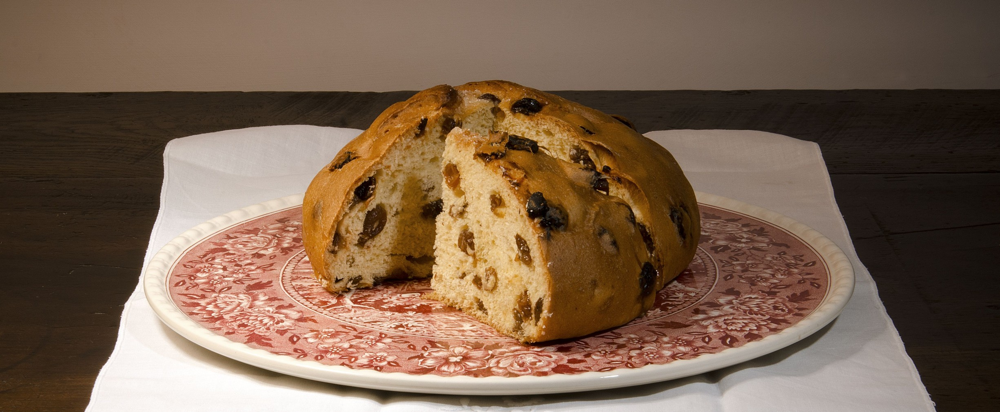
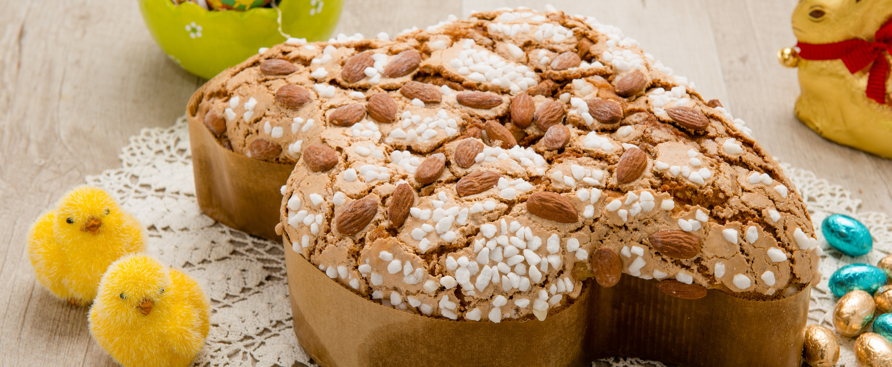

Baldassini è il simbolo di una tradizione fatta di semplicità, di cose genuine e di amore per il proprio mestiere, tramandata di generazione in generazione.
La nostra produzione è caratterizzata da una ricerca e da un utilizzo di materie prime selezionate, ed è incentrata su dolci e biscotti completamente a "lievitazione naturale", come il Biscotto della Salute, il Ciambellone, il trancio di Granciambellone, la Focaccia Dolce a fette, i prodotti da ricorrenza come il Panettone e la Colomba, e i dolci "speciali" come la Torta della Nonna ed il Pandolce "5 Terre".
Il lievito madre è un impasto di farina e acqua acidificato da un complesso di lieviti e batteri lattici che sono in grado di avviare la fermentazione.
A differenza del cosiddetto lievito di birra, la fermentazione dei batteri lattici produce acidi organici e consente una maggiore crescita del prodotto e una maggiore digeribilità e conservabilità.
A causa dei tempi di lavorazione più lunghi, gli enzimi che partecipano al processo di lievitazione rendono il prodotto più sano e digeribile.
